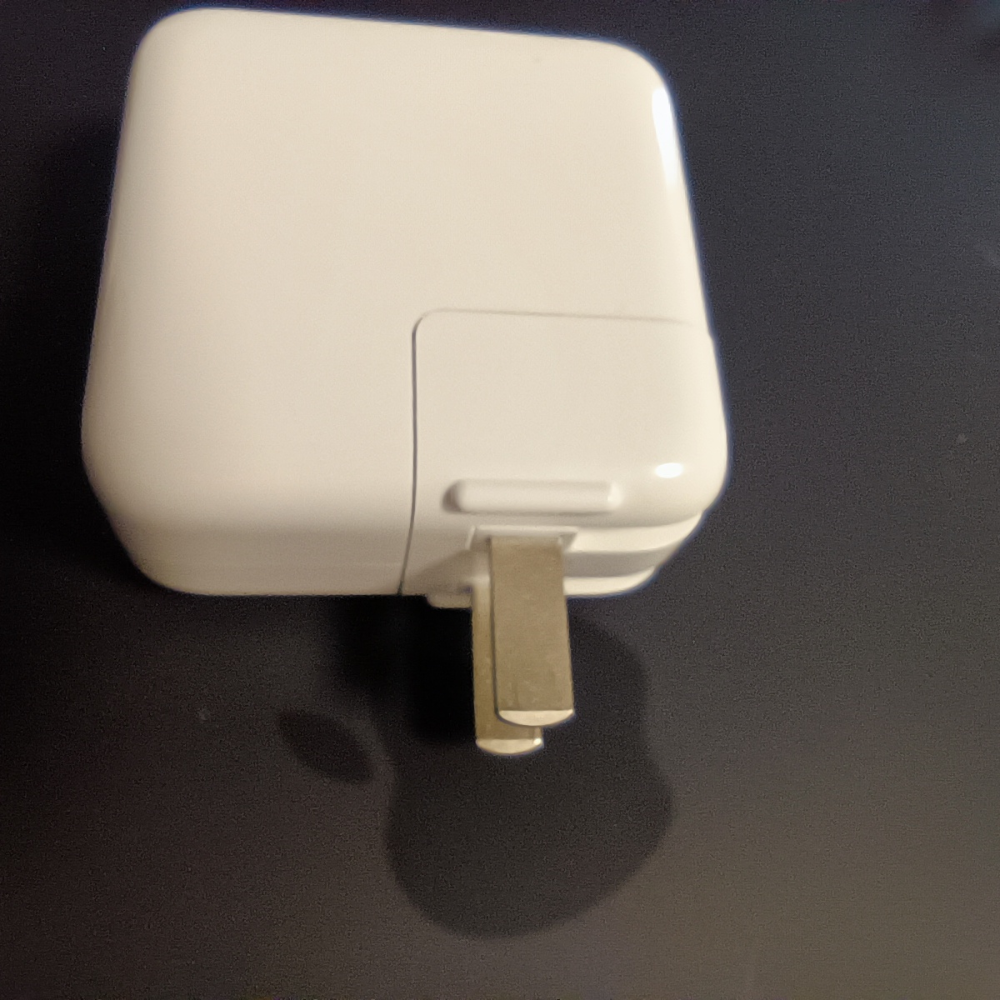
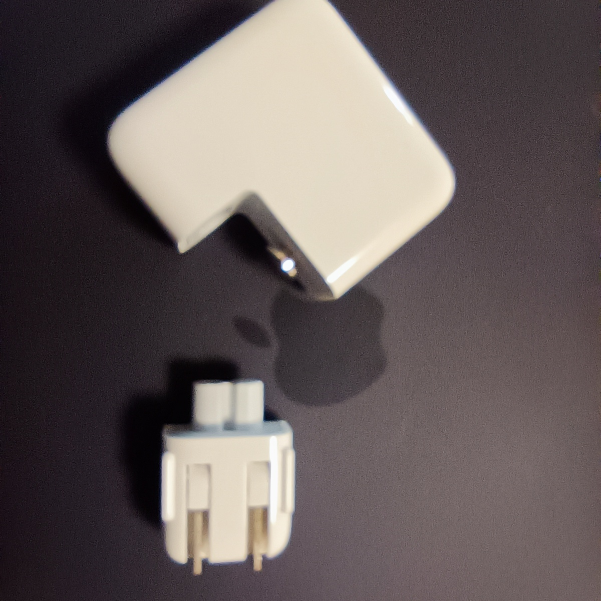
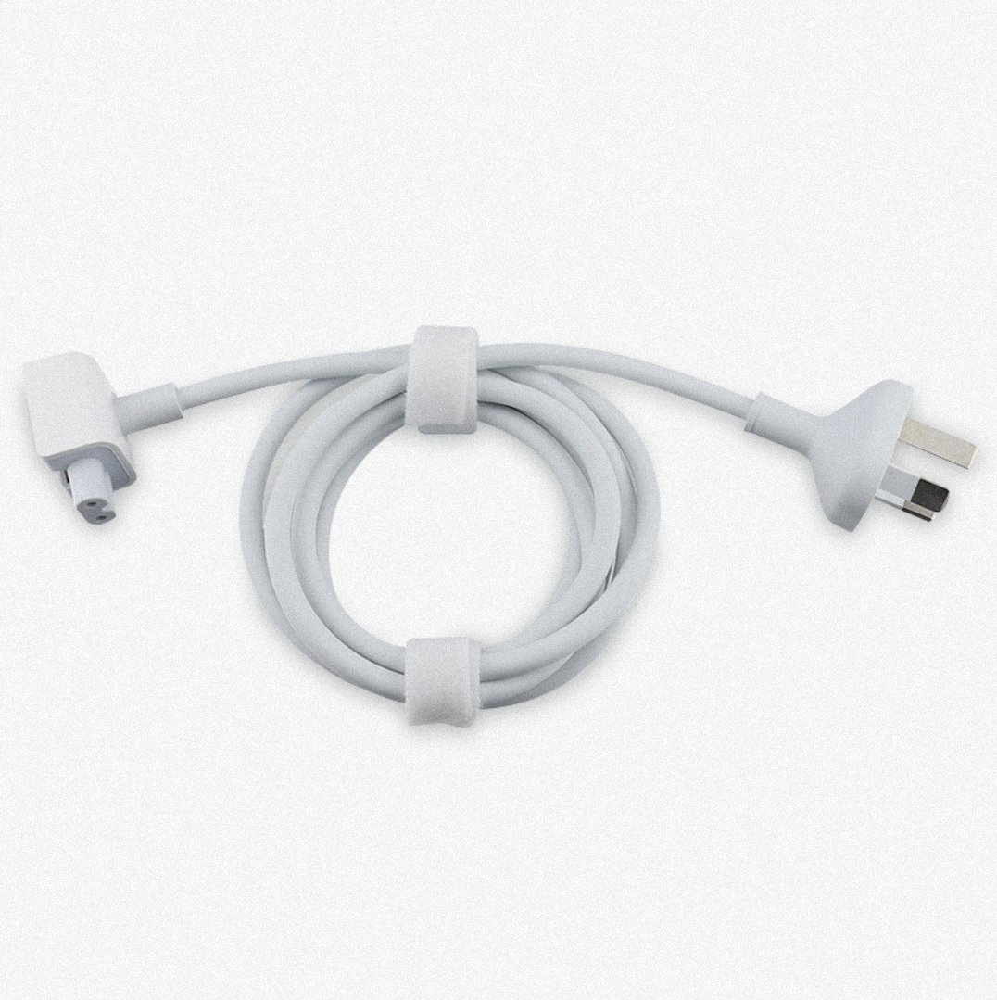
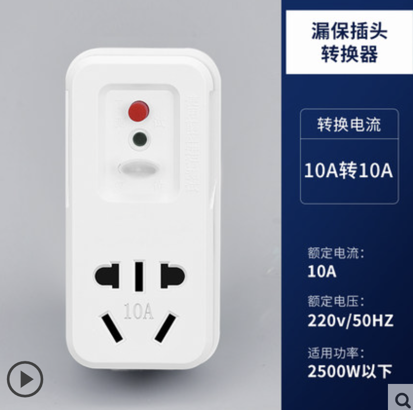
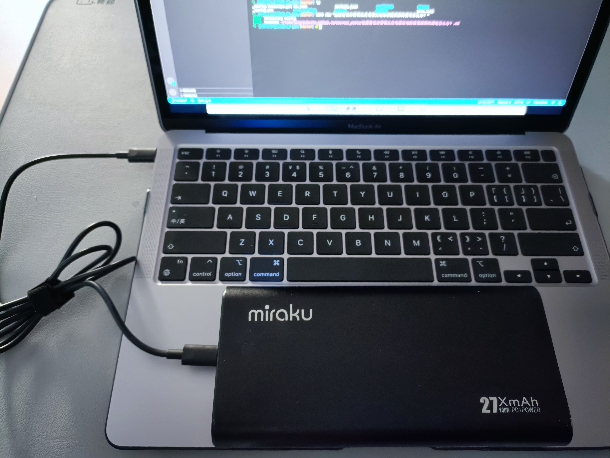

问题
最近换了苹果的笔记本，是 M1 的 MacBook Air，充电器是两头的，这样的，

每次充电时，都会感觉到笔记本上麻麻的，好像在漏电似的。
换用以前电脑上的那种三脚插头的充电器，就不会有这个问题。
原因
造成原因解释起来有点太专业，我也没看懂，感兴趣的同学可以看这里
危害
- 对人体没有危害，人体安全电流是0.25安，它这个漏电电流大概是0.05安
- 不是所有人都能感觉到它的存在，我是轻轻接触到笔记本的金属表面才会感觉很明显
解决
越来越多的充电设备使用两插设计了，好处是减少体积增加了便携性，但是这种漏电的感觉真的难受，所以伙搜集了一些解决方法
苹果的原装充电器的插头是可以更换的，像这样把插头拔下来，

然后换一个这种在三相插头就好了。这种三相插头某宝有卖，30几块钱，效果立杆见影，而且可以当延长线用，

但是没找到那种只有三相插头不带线的，便携性不好不是所有以充电器都可以换插头，所以可以用这种免接地线在漏电保护插座, 或者接地宝，而且可以把插排插到上面扩展使用，多插几个充电器也可以免漏电啦
第3种方法需要有一个支持PD输出在充电宝，平时用充电宝供电，像我这个99Wh在，C 口最大输出可以到100w，M1 MacBook Air用电比较少，连续用两天都没问题
